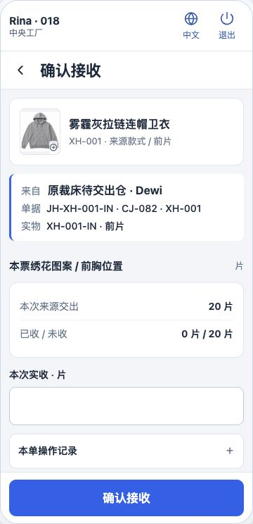
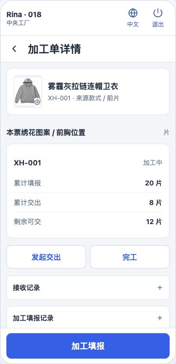
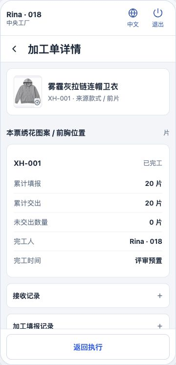

染色、印花、水溶、洗水，以及辅助工艺、特种工艺、辅料加工。按各自数量、动作和交接关系更新，保留接收 / 执行 / 仓管的简约结构。
染布按卷；染纱按毛重和筒型扣皮，交给毛织。
印制、转印进度与新增合格产出分开；分次生成产出卷。
实测产出卷、标签、逐卷扫码、运输及独立实收。
原卷投入、洗后实测、保留原卷追溯和原接收方。
按部位片或尺码分批收发，累计已收并保留未收余量。
专用规格与原单单位；橡筋米数和产出条数分别记录。
盘扣、花朵、织带、花边；保留配方、长度、两端和批次装包。



覆盖辅助工艺、特种工艺及辅料厂的 20 个单一工序。预置示例用于比较不同状态；从接收入口可从头操作。
面料中转仓 → 裁床两仓 → 车缝厂
纱线来料、横机、部位片、缝盘与交出
原料来源、染色批次与指定接收方
实际来料、印花产出、卷码与去向
原印花单、原卷与原接收方
原卷接收、实际完成、分批交出
按规格接收与加工，交回辅料仓
车缝回货、点数、送检、处理复核、出货
按来源实物接收、加工，交给对应接收方
保留本工序规格、单位与实际收发
捆条菲票接收 → 盘扣产出 → 辅料仓
原裁床花瓣片 → 加工 → 原裁床接收
半成品加工、截断、打头分别操作
采购单 → 生产任务 → 指定仓库
独立设计预览，使用页面内存中的示例数据。业务页面未修改。